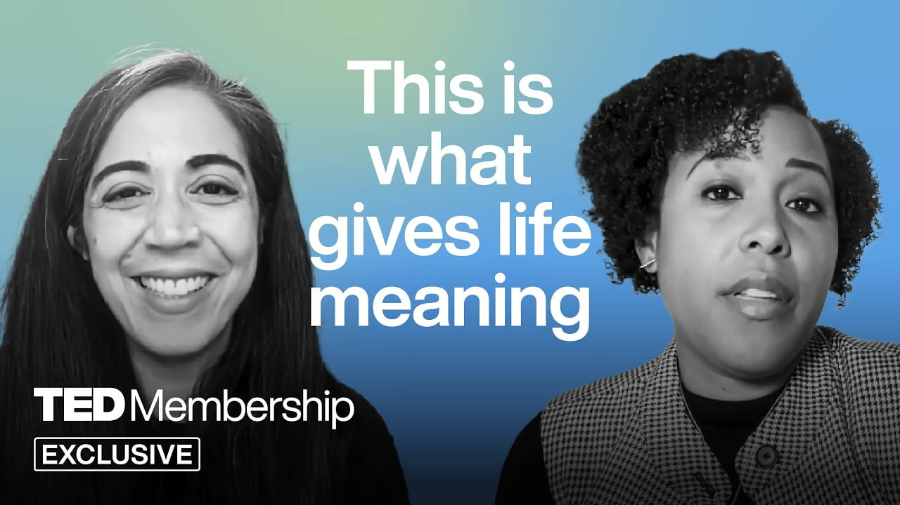

Why Pursuing Happiness Makes You … Less Happy | Emily Esfahani Smith | TED

Summary
In this essay, there is a discussion on the contrast of having short-term happiness or long-term meaningfulness in one’s life, especially in the setting of New Year’s resolutions. While most people create specific and measurable objectives, these become more significant when attached to intrinsic motivations like connections, self-growth, and having purposes in one’s life.
Happiness is characterized as a fleeting emotion that depends on the environment and situation, while meaning is regarded as the stronger foundation to well-being. Having meaning in one’s life comes from the contribution of oneself in something bigger than oneself, whether it be relationships, work, spirituality, or engaging in communities.
In addition to its effects on performance, creatine is linked to positive effects on bone mineralization and neurological activity, particularly during times of stress, lack of sleep, or age. It becomes clear from the discussion that varying methods can be used to consume creatine based on personal goals, which may include muscle mass increase or cognitive function improvement. In general, it is portrayed as a safe supplement supported by research that positively impacts health in multiple areas.
The four important aspects discussed here are related to belongingness, purposefulness, transcendence, and storytelling. The first aspect refers to connections among people; the second one is linked to making contributions. Transcendence relates to having experiences like awe or spirituality, while storytelling provides opportunities for constructing coherent stories about one’s life.
In general, this converstation demonstrates that focusing more on values rather than achievements can be more beneficial when it comes to building a better and more resilient future.
Speaker /(Guest): Emily Esfahani Smith
Interviewer / Host: TED
Concept of the Interview: Why chasing happiness directly can reduce long-term happiness, and
why meaning is more important
Personal Opinion
I have been a frequent watcher of TED Talks in the past. However, as time passed by, I have felt that the website is becoming less meaningful in comparison to its reputation back in the days. From what I have noticed, TED Talks seems to have less profound speakers or those who simply promote their business more often than not. With regard to the said TED Talk, I could see some contradiction in its arguments regarding happiness and meaning, especially when it tried to say that pursuing happiness would make one lose it.
Reflection
This lecture has made me think harder about the manner in which psychological and self-help concepts are portrayed through popular media channels. It has made me doubt the validity of the arguments that are generally put forward in talks that try to motivate or philosophize, particularly on difficult subjects such as happiness and significance. It has been brought home to me that just because an idea has widespread acceptance does not mean it is necessarily backed up properly. Through this talk, I have become more critical in my thinking as I have learned to examine arguments logically.
Date I Watched the Interview
July 19, 2026
New Vocabulary
- Coherence: a The logical and consistent connection between ideas or arguments.
- Interpretive: Open to different meanings or understandings depending on perspective.
- Critical evaluation: The process of carefully analyzing and judging the strength of an argument or idea.